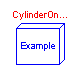
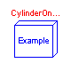
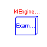
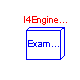

 


This package contains several example models that demonstrate the component and subsystem models found in the 'SimpleCar' package. Each of the examples includes some documentation on how the examples should be used.
SimpleCar.Examples.Race

This example allows you to study the effects of various vehicle/transmission/engine parameters. The simulation will automatically stop once the vehicle has reached 100 kilometers per hour unless a shorter simulation time is specified.
model Race "Race a car from 0-100 kilometers per hour"
extends Modelica.Icons.Example;
Vehicles.SportsCar sports_car;
Chassis.Road race_track;
equation
connect(race_track.road_surface, sports_car.road);
when (sports_car.speed.signal[1] > 100) then
terminate("Simulation from 0-100 kilometers per hour completed")
;
end when;
end Race;

This simulation involves a single cylinder connected to a dynamometer. One interesting thing to look at in this simulation is the instantaneous torque felt by the dynamometer vs. the average torque. Both are available as variables to be viewed within the dynamometer model.
model CylinderOnDyno
"Single cylinder engine connected to a dynamometer"
extends Modelica.Icons.Example;
Engine.Components.Reservoir intake(P=50000);
Engine.Components.Reservoir exhaust;
Engine.Components.IndividualCylinder cylinder(
spark_advance=20,
burn_duration=60,
evo=40,
ivo=150,
evc=205,
ivc=310,
combustion_chamber);
Engine.Components.Dynamometer dyno;
Modelica.Blocks.Sources.Ramp speed_profile(
height={3000},
duration={5},
offset={1500},
startTime={2});
Engine.GeometrySource sample_geometry(
bore=.08,
stroke=.08,
conrod=.152,
comp_ratio=9.5);
equation
connect(cylinder.exhaust, exhaust.tap);
connect(cylinder.intake, intake.tap);
connect(dyno.shaft, cylinder.crankshaft);
connect(speed_profile.outPort, dyno.rpm);
connect(sample_geometry.geom, cylinder.geom);
end CylinderOnDyno;
SimpleCar.Examples.CylinderAndInertia

This is a simulation of a single cylinder engine connected to a flywheel. The idea is to see the acceleration of the flywheel. This is in contrast to other models where dynamometers are used to keep the speed fixed.
model CylinderAndInertia
"Single cylinder engine connected to a flywheel"
extends Modelica.Icons.Example;
Engine.Components.Reservoir intake(P=50000);
Engine.Components.Reservoir exhaust;
Engine.Components.IndividualCylinder cylinder1(spark_advance=20,
burn_duration=60);
Engine.GeometrySource sample_geometry(
bore=.08,
stroke=.08,
conrod=.152,
comp_ratio=9.5);
Modelica.Mechanics.Rotational.Inertia flywheel(J=10);
Modelica.Mechanics.Rotational.Torque starter;
Modelica.Blocks.Sources.Step starter_torque(height={100}, startTime={1});
equation
connect(cylinder1.exhaust, exhaust.tap);
connect(cylinder1.intake, intake.tap);
connect(sample_geometry.geom, cylinder1.geom);
connect(flywheel.flange_b, cylinder1.crankshaft);
connect(starter_torque.outPort, starter.inPort);
connect(starter.flange_b, flywheel.flange_a);
end CylinderAndInertia;

This is a simulation of an I4 engine connected to a dynamometer. The interesting thing about this simulation that sets it apart from the single cylinder case is that this model will demonstrate manifold filling and emptying effects.
model I4EngineOnDyno "I4 engine connected to a dynamometer"
extends Modelica.Icons.Example;
Engine.Components.Dynamometer dyno;
Modelica.Blocks.Sources.Ramp speed_profile(
height={3000},
duration={5},
offset={1500},
startTime={2});
Engine.Components.Reservoir intake(P=101800);
Engine.Components.Reservoir exhaust;
Engine.SportsCarGeometry sample_geometry(
bore=.08,
stroke=.08,
conrod=.152,
comp_ratio=9.5);
Engine.Components.I4_Engine I4(
spark_advance=20,
burn_duration=60,
evo=64);
Engine.Components.Manifold intake_manifold;
Modelica.Blocks.Sources.Constant throttle_angle(k={90});
equation
connect(I4.engine_geometry, sample_geometry.geom);
connect(I4.exhaust, exhaust.tap);
connect(dyno.shaft, I4.crankshaft);
connect(intake_manifold.ambient, intake.tap);
connect(intake_manifold.manifold, I4.intake);
connect(throttle_angle.outPort, intake_manifold.throttle_angle);
connect(speed_profile.outPort, dyno.rpm);
end I4EngineOnDyno;
SimpleCar.Examples.I4EngineAndInertia

This model simulates an I4 engine accelerating an inertia.
model I4EngineAndInertia "I4 engine connected to a flywheel"
extends Modelica.Icons.Example;
Engine.Components.I4_Engine engine(spark_advance=20, burn_duration=60);
Engine.GeometrySource geometry(
bore=0.080,
stroke=0.080,
conrod=0.157);
Engine.Components.Reservoir intake_manifold;
Engine.Components.Reservoir exhaust_manifold;
Modelica.Mechanics.Rotational.Inertia flywheel(J=10, w(start=157));
equation
connect(geometry.geom, engine.engine_geometry);
connect(exhaust_manifold.tap, engine.exhaust);
connect(intake_manifold.tap, engine.intake);
connect(flywheel.flange_b, engine.crankshaft);
end I4EngineAndInertia;